Rollcall takes attendance by face. A teacher opens a session and points a camera at the room, and the register fills itself. Each student enrols once, on their own phone, with consent.
A teacher creates a class and gets a six-character code. Students sign up, join with that code, and take five photos. Those photos become a face template of 128 numbers, and the photos are discarded. During a session, the browser sends camera frames to the API, which matches faces against that class's students only and writes attendance rows. The teacher can correct any entry by hand, even after the session ends, and export the register as a CSV that opens in Excel. Students see only their own record.
The product grew out of an old desktop app built on Tkinter and OpenCV, which is kept in legacy/. Rollcall is a rewrite for the situation that app could not serve: many students, each with their own device, and a teacher who has a few minutes at the start of a class.
Rollcall has clear limits, set out in section 11. The most important is that it has no liveness detection: a good photo may fool it, so teachers should keep an eye on the camera. It has been tested with synthetic faces, not in a real classroom.
Calling names uses up the start of every class, and a paper register is easy to sign for someone else. It then has to be copied somewhere before anyone can work out who is falling behind. Face recognition can remove the calling and the copying, but only if students accept it and teachers can trust the result. A system that keeps photos of students, or marks people the teacher cannot overrule, solves one problem by creating a worse one.
The first version was a desktop app. One machine ran a Tkinter window, captured up to 50 photos per student into a folder, trained an LBPH model, and wrote a CSV per subject. It proved the idea but needed each student to stand in front of that one machine. A later web version in the git history moved to Flask, MongoDB, MTCNN and DeepFace. Rollcall replaced that backend and its schema. Table 1 shows the three.
| Desktop app | Web prototype | Rollcall | |
|---|---|---|---|
| Where | legacy/ | Git history, before commit 2930098 | Current code |
| Interface | Tkinter window | Next.js and Flask | Next.js and Flask |
| Detection | Haar cascade | MTCNN | YuNet |
| Recognition | LBPH, trained per install | DeepFace, Facenet512 | SFace, no training step |
| Storage | Image folder and CSV files | MongoDB | Postgres; templates, no photos |
The screenshots in this section come from the automated browser flow described in section 9.2. All faces are AI-generated synthetic images, not real people, and the names are invented test data.
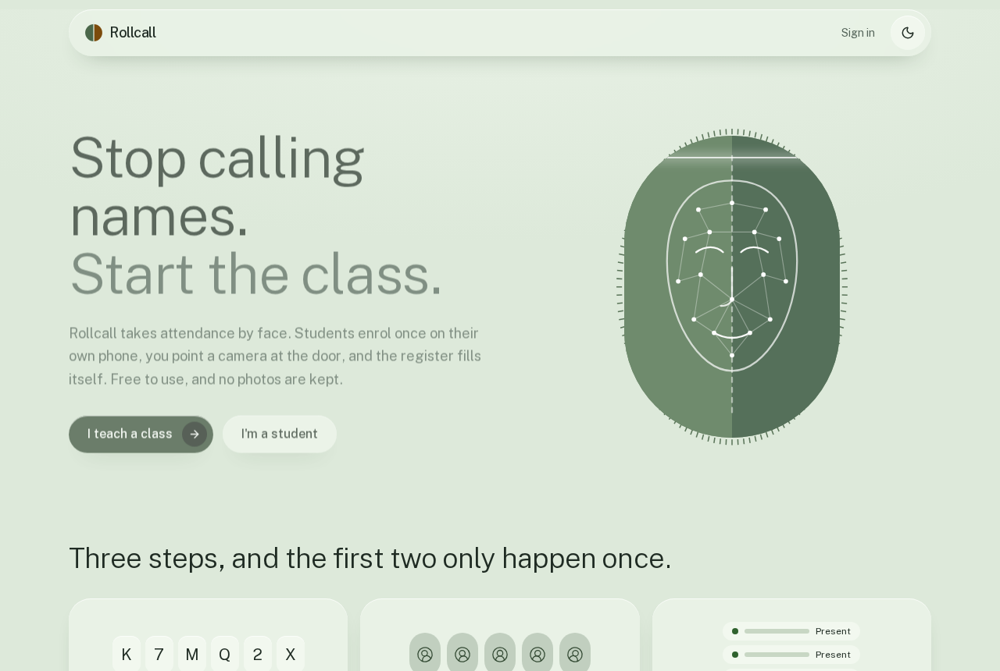
Create a class. After signing up as a teacher, the home page lists classes and recent sessions. Naming a class generates a six-character code from an alphabet that leaves out easily confused characters such as 0, O, 1, I and L, because codes get read aloud. The teacher shares the code or an invite link.
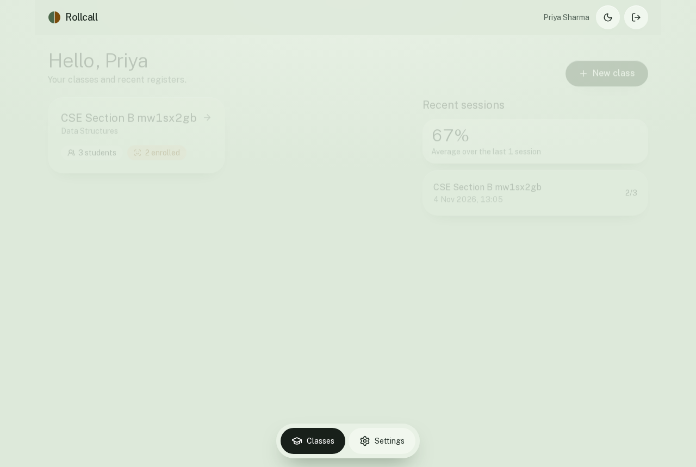
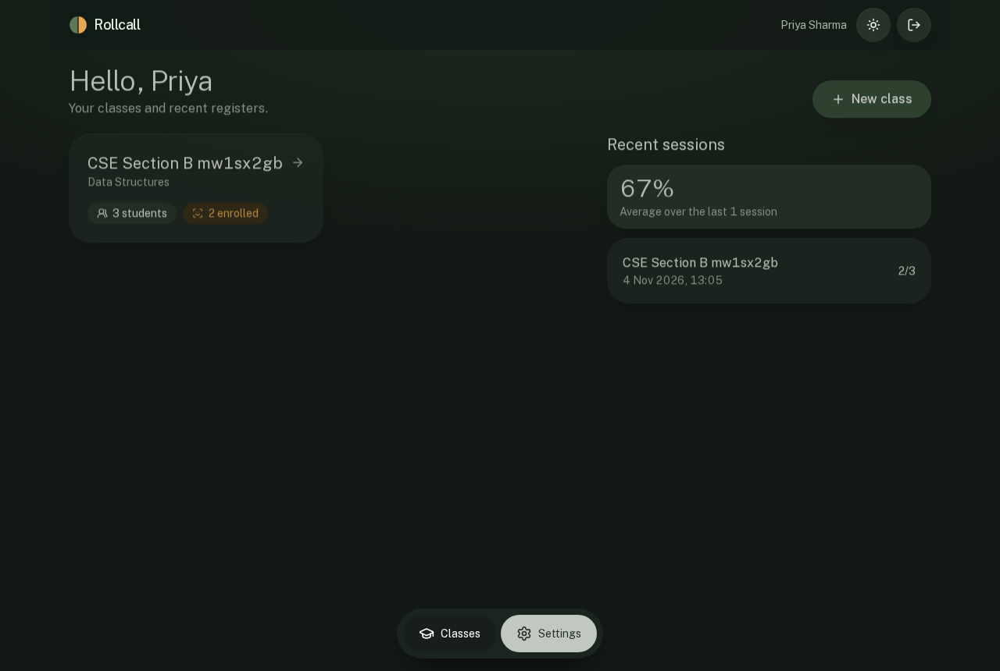
Watch the roster fill. The class page shows who has joined and who has enrolled a face. Students without a face can still be marked by hand.
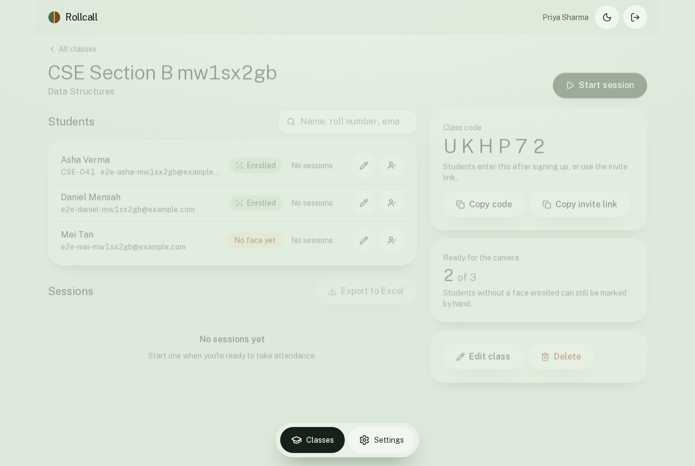
Run a session. The teacher starts a session, optionally names the topic, and starts scanning on a laptop or phone. Each face gets a box on the video: green with a name when it is matched, amber with "Not recognised" when it is not. The register beside the video updates when someone new is marked.
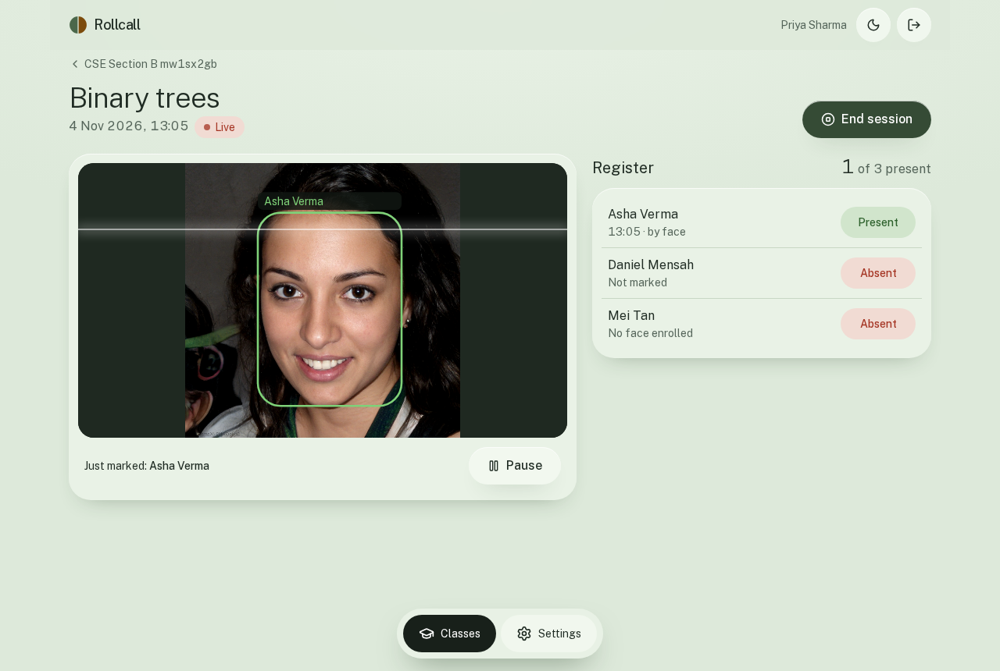
Correct and finish. Tapping a student's status switches it between present and absent, recorded as a manual mark. Ending the session shows a summary. The register can still be corrected afterwards, and it exports as a CSV with the name, roll number, email, status, time and method. The class page also exports the full register, with every student against every finished session.
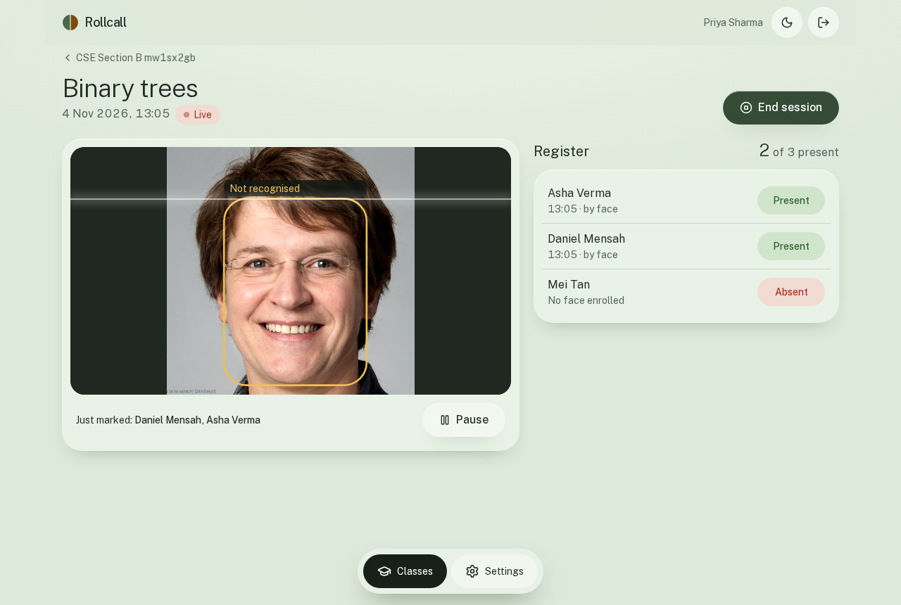
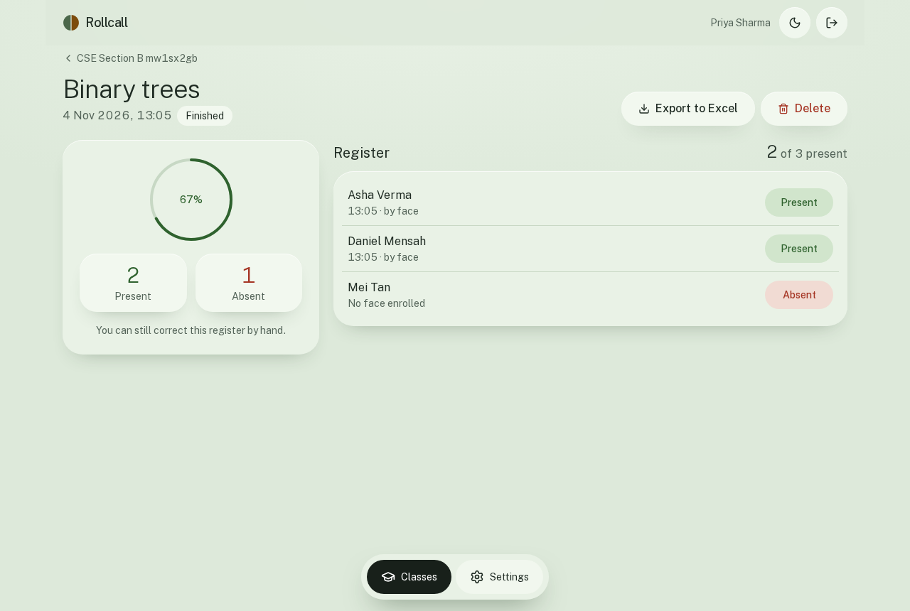
Sign up and join. An invite link joins the class automatically after sign-up. Otherwise the student types the code. The home page shows a short checklist: add a roll number, enrol a face, join a class.
Enrol. The camera button stays disabled until the consent box is ticked. The page then asks for five photos, looking straight ahead, left, right, up and down. Each photo is checked straight away, so a bad one is caught when it is taken. A student can then test recognition before class. The test tells them whether the camera knows them, and nothing goes on their attendance.
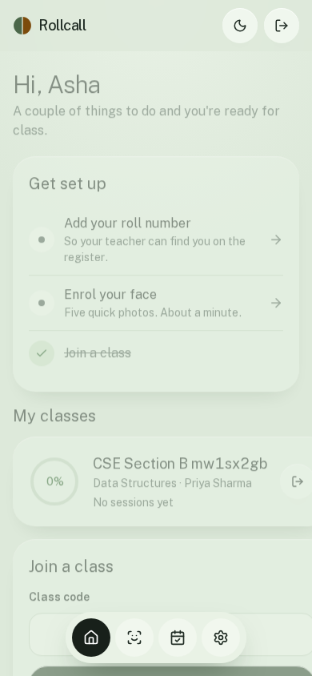
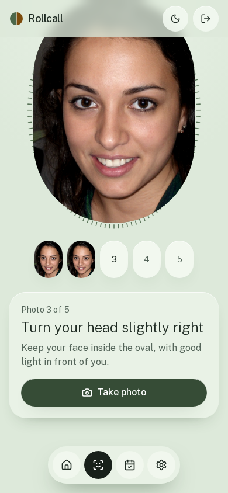
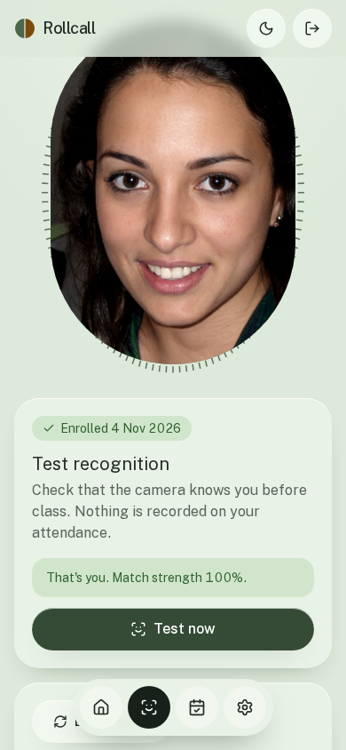
See your own record. The attendance page lists finished sessions since the student joined the class, with present and absent counts and a rate. It filters by class and date, and exports to a CSV. A session appears only after the teacher ends it. Students have no way to see anyone else's attendance.
Stay in control. From the My face page and from settings, a student can delete their template or their whole account at any time. Enrolment is optional, and a teacher can always mark a student by hand instead.
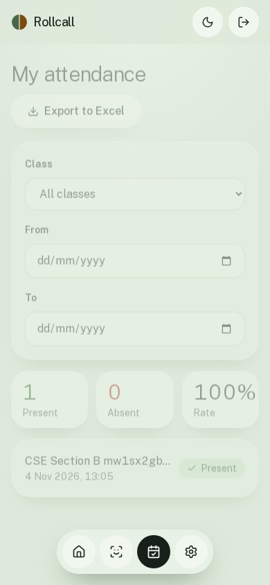
Rollcall has three deployed parts. Vercel serves the web app. The browser then calls the API on Render directly, across origins, so no attendance data or camera frame passes through Vercel. The API is the only part that talks to the database, and the only place face templates are read.
| Component | Role |
|---|---|
frontend/ | Next.js 16 and React 19 with Tailwind CSS. Pages are client components that call the API through lib/api.ts. |
backend/app.py | All 28 routes: accounts, enrolment, classes, sessions, recognition and reports. Applies schema.sql on every boot, so each statement is idempotent. |
backend/faces.py | Image decoding, detection, embedding and matching. Inference runs behind one lock because the OpenCV models hold per-call state. |
backend/schema.sql | Five tables, their indexes, and the rule that a class has one open session at a time. |
A session is an ordinary database row. Starting one twice returns the same open session, enforced by a partial unique index. Scanning is a loop in the browser: send a frame, wait for the reply, wait 700 ms, repeat. A slow server therefore slows the loop down rather than building up a queue of requests. Figure 9 shows the messages.
The previous backend detected faces with MTCNN and computed embeddings with DeepFace's Facenet512 model, which brings TensorFlow with it. That stack does not fit a 512 MB instance, and the free tier provides exactly that. Rollcall now needs only opencv-python-headless and two ONNX models from the OpenCV Zoo: YuNet, about 230 KB, and SFace, about 37 MB. The Dockerfile bakes both into the image and pins them by SHA-256, so a cold start never downloads anything. Container measurements are in section 9.4.
This was a choice driven by memory. Facenet512 and SFace were not compared on the same benchmark, so this report makes no claim that one is more accurate than the other.
A template is 128 numbers scaled to unit length, so cosine similarity is a dot product. The values in Table 3 are constants in faces.py and app.py.
| Setting | Value | Meaning |
|---|---|---|
MAX_SIDE | 640 px | Longest side of an image after decoding |
DETECTION_SCORE | 0.8 | YuNet confidence required to report a face |
MIN_FACE_PX | 60 px | Smaller faces are ignored |
MATCH_THRESHOLD | 0.42 | Similarity needed to count as the same person; set by FACE_MATCH_THRESHOLD |
MATCH_MARGIN | 0.05 | How far the best match must beat the runner-up |
| Duplicate check | 0.52 | Threshold plus 0.1: a template this close to another account is refused |
ENROLL_SHOTS | 5 | Photos required for enrolment |
Enrolment has to catch two kinds of mistake: bad photos, and photos of the wrong person. The second check on the server handles mixed photos. Each of the five embeddings is compared with the average of the other four. Comparing it with an average of all five would let a different person through, because they would partly be matching themselves.
The third check enforces one person, one account. The new template is compared with every enrolled user in the database, not only those in one class. This stops a friend's face being enrolled on your account so that they can sign in for you. The stricter 0.52 threshold keeps two similar-looking students from blocking each other.
Figure 11 follows one frame from the camera to an attendance row. The exactly-one-face rule belongs to enrolment and the self-test. A live session deliberately handles every face in the frame, because a teacher may have several students in view. It has its own guards instead: faces are handled biggest first, one student can be claimed only once per frame, and the database primary key allows one attendance row per student per session. If a repeat match reaches the insert, it reports "already" and changes nothing.
With one enrolled student in a class there is no runner-up, so only the threshold applies. A student who has not enrolled cannot match, and can only be marked by hand.
backend/tests/evaluate_threshold.py runs the real detector and recogniser over labelled face pairs and prints false accept and false reject rates for thresholds from 0.30 to 0.60. On the LFW standard 6,000 pairs, 0.42 was chosen: no different-person pair reached it, and the highest different-person score was 0.412. False rejects at that point were 3.4%.
In a register, a false accept marks an absent student present with no visible sign, while a false reject costs a retry on the next frame or a tap by the teacher. That is why the threshold sits just above the highest different-person score. The gap is narrow, only 0.008, so the result should not be read as a guarantee. The margin test and class-only matching add protection that the benchmark does not measure. Full results are in section 9.3.
Five tables hold everything. All foreign keys cascade on delete, which is what makes account deletion complete: removing a user removes their classes, enrolments and attendance. The schema has no table for photos, because no photos are kept.
backend/schema.sql.attendance table has no absent rows. A student is absent from a session if they had joined by then and have no row. Removing a mark therefore deletes the row.joined_at.one_open_session covers class_id where ended_at is null, so two teachers' tabs cannot open rival sessions.ON CONFLICT DO NOTHING, makes repeated recognition harmless. The first mark's time and method are kept.face_consent_at is set with the template and cleared with it.Requests and responses are JSON. Authenticated routes need an Authorization: Bearer header. The Role column shows who may call each route: another role receives 403. A teacher who asks for another teacher's class or session receives 404, so the API does not reveal that it exists.
backend/app.py.| Method | Path | Role | Purpose |
|---|---|---|---|
| Service and accounts | |||
| GET | /health | Public | Health check, also used to wake the server |
| POST | /api/signup | Public | Create an account and return a token |
| POST | /api/signin | Public | Sign in and return a token |
| GET | /api/me | Any | Read own profile |
| PATCH | /api/me | Any | Update own profile |
| POST | /api/me/password | Any | Change password, signing out other devices |
| DELETE | /api/me | Any | Delete the account, after confirming the password |
| Student | |||
| POST | /api/me/face/check | Student | Count faces in a frame; once enrolled, test the match |
| POST | /api/me/face | Student | Enrol from five photos, with consent |
| DELETE | /api/me/face | Student | Delete the template and consent record |
| GET | /api/student/classes | Student | Own classes with attendance totals |
| POST | /api/student/classes/join | Student | Join a class by code |
| DELETE | /api/student/classes/:id | Student | Leave a class |
| GET | /api/student/attendance | Student | Own history, with class and date filters |
| Teacher: classes | |||
| GET | /api/classes | Teacher | Own classes and recent sessions |
| POST | /api/classes | Teacher | Create a class and its join code |
| GET | /api/classes/:id | Teacher | Class, roster and sessions |
| PATCH | /api/classes/:id | Teacher | Rename a class or change its subject |
| DELETE | /api/classes/:id | Teacher | Delete a class and its registers |
| GET | /api/classes/:id/report | Teacher | Students by sessions, for the export |
| PATCH | /api/classes/:id/students/:sid | Teacher | Edit a student in this class |
| DELETE | /api/classes/:id/students/:sid | Teacher | Remove a student from this class |
| POST | /api/classes/:id/sessions | Teacher | Start a session, or return the one already open |
| Teacher: sessions | |||
| GET | /api/sessions/:id | Teacher | Session with its register |
| POST | /api/sessions/:id/recognize | Teacher | Match the faces in one frame and mark attendance |
| PUT | /api/sessions/:id/students/:sid | Teacher | Set present or absent by hand, even after the end |
| POST | /api/sessions/:id/end | Teacher | End the session and return the register |
| DELETE | /api/sessions/:id | Teacher | Delete a session and its attendance |
Face data is sensitive, and attendance is a record people may rely on. Table 5 lists each control and its limit.
| Control | What the code does | Limit |
|---|---|---|
| Tokens | Signed with itsdangerous, valid for 14 days. Each carries the last 12 characters of the password hash, so changing a password signs out every other device. | Kept in localStorage, which a script running on the site could read. |
| Passwords | Hashed with Werkzeug's salted scrypt. Deleting an account needs the password again. | Email addresses are not verified. |
| Role checks | Every protected route declares its role, checked against the database on each request. Students cannot reach teacher routes or mark themselves present. | Anyone can sign up as a teacher, which only gives access to classes they create. |
| Class scoping | Every class and session lookup includes the teacher's id. Another teacher's data returns 404. Recognition compares only the class's enrolled students. | |
| Embeddings stay on the server | The column is left out of the public column lists and is read only to compare faces. A test asserts that no response contains "embedding" or "password". | Stored as plain numbers in Postgres. The app adds no column encryption. |
| Photos | Frames are decoded in memory and never written to disk or the database. Enrolment previews stay on the student's device until they are uploaded. | Frames travel to the API as data, over HTTPS. |
| Consent | The API requires consent to be exactly true and records when it was given. The camera button waits for the tick box. | |
| Deletion | A student can delete the template at once, or the whole account, which cascades to attendance. A teacher's deletion also removes their classes and registers. | Backups held by the database host were not examined. |
| CORS | Only the production site and origins in FRONTEND_ORIGIN are allowed, and only the two headers the app needs. | CORS limits browsers. It is not access control; the token is. |
| Rate limits | See Table 6. Attempts over the limit receive 429. | In memory, per process, and reset on restart. |
| CSV exports | A cell starting with =, +, -, @, a tab or a carriage return gets a leading apostrophe, so a hostile name cannot run as a formula in Excel. Quotes are escaped. | |
| Input limits | Requests are capped at 12 MB, and unexpected errors return a generic message. |
| Action | Limit | Counted by | Note |
|---|---|---|---|
| Sign up | 20 per hour | Forwarded address | The header can be set by the client, so this can be evaded |
| Sign in | 10 per 5 minutes | Someone else's failed attempts can lock an account for 5 minutes | |
| Change password, delete account | 10 per 5 minutes | User | Shared counter |
| Join a class | 20 per 5 minutes | User | Slows guessing of class codes |
A teacher sees the students who joined their class: name, email, profile details, and attendance in that class, including the match score for camera marks. A student sees only their own record. Nobody can see a face template through the app, including the student it belongs to. The template is numbers rather than an image, but it is still biometric data and is treated as sensitive.
backend/tests/test_api.py holds 10 tests. They run against a real Postgres and the real face models, with nothing mocked.
| Test | What it establishes |
|---|---|
signup_validates_and_rejects_duplicates | Bad email, short password and unknown role are refused; a duplicate email gets 409, ignoring case |
signin_and_token_rules | Wrong password and forged token fail; old tokens stop working after a password change |
signin_is_rate_limited | The eleventh attempt gets 429 |
cors_only_allows_the_site | An allowed origin gets the header and another origin does not |
full_attendance_flow | Join, enrol, consent, mixed-photo refusal, duplicate refusal, recognition, strangers, ending, manual correction, reports and filters |
data_is_scoped_to_its_owner | Another teacher gets 404 on eight routes; a student gets 403 on teacher routes |
only_class_members_can_match | An enrolled student outside the class stays unknown |
no_embedding_ever_leaves_the_server | Four responses contain neither "embedding" nor "password" |
bad_images_and_delete_account | Bad images get 400; account deletion needs the password and takes effect |
frontend/e2e/flow.mjs drives the whole product through four real Chromium browsers, one per person, each with a fake camera feed of synthetic faces: a teacher on a desktop viewport and three students on phone viewports. It passes 24 checkpoints and fails if any browser logs a console error. Along the way it checks that:
Accuracy was measured with backend/tests/evaluate_threshold.py on the Labeled Faces in the Wild (LFW) standard 6,000 pairs. One pair was skipped.
| Measure | Result |
|---|---|
| Same-person pairs evaluated | 2,999 |
| Different-person pairs evaluated | 3,000 |
| False accept rate | 0.0% (0 of 3,000) |
| False reject rate | 3.4% |
| Highest different-person score | 0.412 |
| Measure | Result |
|---|---|
| Memory at idle | about 102 MB |
| Peak memory, 30 face checks plus 16 signups at once | 195 MB |
| Recognition, one face, median / worst | 0.7 s / 0.8 s |
| Recognition, six faces, median | 2.0 s |
| Enrolment, five photos, median | 3.4 s |
| Sign-in, median | 1.1 s |
| Container start to first healthy response | about 10 s |
Measured in the Docker image limited to Render's free-tier size (512 MB, 0.1 CPU) with local Postgres, so database latency to Neon isn't included. Waking from sleep on Render takes longer.
| Part | Host | Details |
|---|---|---|
| Frontend | Vercel | https://rollcall-classroom.vercel.app |
| API | Render free tier, Singapore | https://rollcall-api-w318.onrender.com. Docker image on Python 3.11, defined by render.yaml, with health checks on /health. Gunicorn runs 1 worker with 4 threads. |
| Database | Neon, Singapore | Postgres. The API applies schema.sql at each boot. |
| Variable | Where | Purpose |
|---|---|---|
DATABASE_URL | API | Postgres connection string. Required. |
SECRET_KEY | API | Signs tokens. Required. Generated by the Render blueprint. Changing it signs everyone out. |
FRONTEND_ORIGIN | API | Extra allowed sites, comma-separated. The production site is always allowed. |
FACE_MATCH_THRESHOLD | API | Optional. Defaults to 0.42. |
MODEL_DIR | API | Optional. Defaults to models/ beside faces.py. |
PORT | API | Set to 10000 in the Dockerfile; 5000 when running app.py directly. |
NEXT_PUBLIC_API_URL | Frontend | Base URL of the API, fixed at build time. |
/health on load, so the wake-up often starts before anyone signs in. Scan requests do not trigger the banner, and a failed scan shows an error while the loop keeps trying.These limits are real and affect how Rollcall should be used today. The right-hand column shows what would address each one. Nothing there has been started.
| Limit | What it means | Next step |
|---|---|---|
| No liveness detection | A good photo may fool the camera. Teachers should watch the camera and correct the register by hand. | Add a liveness check, and test it against printed and on-screen photos. |
| No forgot-password email | There is no email service yet, so a forgotten password cannot be reset by the user. | Add an email provider and a reset flow with single-use links. |
| Free-tier cold start | The first request after idle can take about a minute. The site explains the wait, but the wait remains. | Move the API to an always-on instance. |
| In-memory rate limits, one process | Counters reset on restart, and the design does not extend to several instances. Recognition requests run one at a time. | Keep counters in a shared store, and run more processes if classes need parallel recognition. |
| Lighting and angle matter | Small faces are ignored, and poor light lowers scores. The app works best with one or two people in view at a time. | Measure in real rooms, then write guidance on camera placement. |
| Only synthetic faces in product testing | The API tests and browser flow use AI-generated faces. The LFW benchmark is the only measurement on photographs of real people. No real class has used it for a study. | Run a consented pilot with a real class, and record false accepts and rejects. |
| Fairness not measured | Accuracy has not been broken down across groups of people, and the overall LFW figures cannot show this. | Include this in any pilot, before relying on the register for decisions about students. |
Taken together, this means the register is an assistant to the teacher, and the teacher remains responsible for it. Rollcall should not be the only evidence in any decision that affects a student until a real pilot has measured its error rates.
This needs Docker, Python 3.11 and Node 22 or later. Commands run from the repository root.
docker run -d --name rollcall-pg -e POSTGRES_PASSWORD=postgres -e POSTGRES_DB=rollcall \ -p 5433:5432 postgres:17-alpine
cd backend python3.11 -m venv .venv && source .venv/bin/activate pip install -r requirements.txt mkdir -p models curl -fL -o models/face_detection_yunet_2023mar.onnx \ https://github.com/opencv/opencv_zoo/raw/main/models/face_detection_yunet/face_detection_yunet_2023mar.onnx curl -fL -o models/face_recognition_sface_2021dec.onnx \ https://github.com/opencv/opencv_zoo/raw/main/models/face_recognition_sface/face_recognition_sface_2021dec.onnx cp .env.example .env # then set SECRET_KEY python app.py # http://localhost:5000
cd frontend npm install cp .env.example .env.local npm run dev # http://localhost:3000
The API tests drop and recreate the public schema of their database, which by default is the same local database as above. Never point TEST_DATABASE_URL at data you want to keep.
cd backend && pip install pytest FACE_DIR=<folder with at least 6 JPEGs, one distinct face each> pytest tests/test_api.py cd frontend FACE_DIR=<folder with p1.y4m p2.y4m p3.y4m room.y4m> node e2e/flow.mjs
The browser flow needs the site and API running, and the faces in its feeds must not already be enrolled, because the duplicate check would refuse them. The README has more detail, including how to rebuild this report and the GIFs.